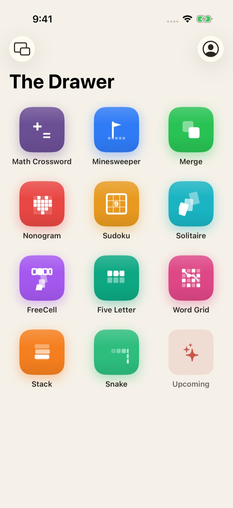
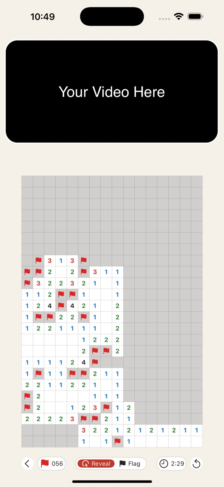
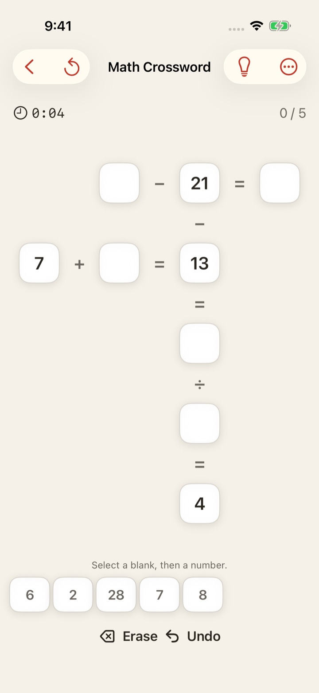
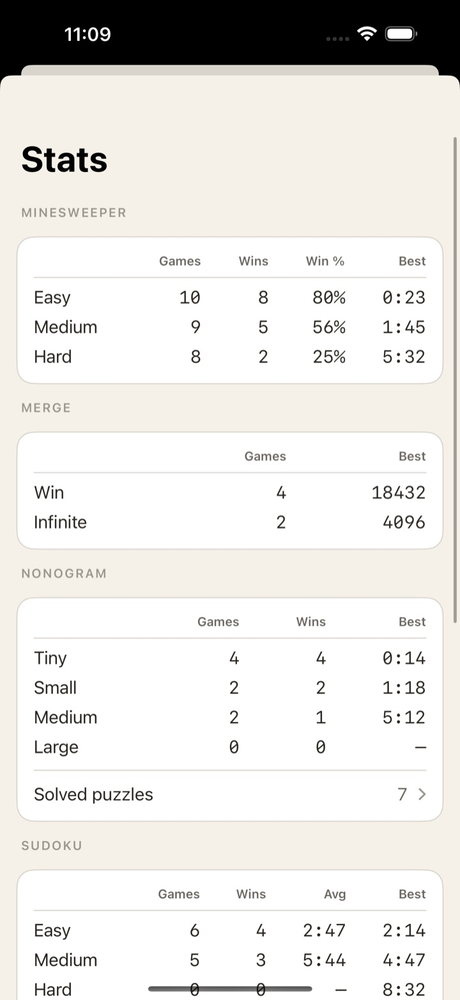
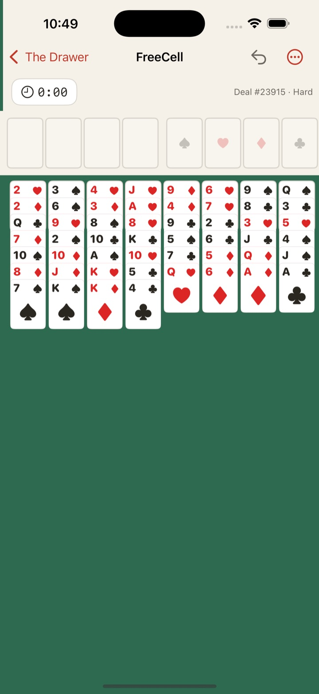

Your favorite games.
No ad breaks.
Sudoku, Solitaire, Minesweeper and eight more, together on iPhone and iPad. Play offline and keep your video going.
Free for iPhone and iPad. No account needed.


The Drawer View full screen ↗Play while your
video runs.
Tell GameDrawer where your video sits. The board and its controls move out of the way.


View full app screenWhere is your video?
Pick the spot closest to it, then play a few moves.
Large
Small
A preview of Minesweeper on Easy. Every game in the app supports all six positions. Picture-in-Picture needs a video app that supports it.
Eleven games.
One drawer.
Logic, cards, words and a little arcade. Every game works offline, and supported puzzles save your place.
- Math Crossword
- Minesweeper
- Merge
- Nonogram
- Sudoku
- Solitaire
- FreeCell
- Five Letter
- Word Grid
- Stack
- Snake


View full app screenA look inside.


Your stats
stay yours.
Best times, wins and game records stay on your device. Export a backup, or turn on iCloud sync to carry them to another device.
Sync is off until you turn it on.


View full app screenNo coins.
No energy timers.
Open the app and play.
No banner ads, no forced video ads, no fake currency, no subscription pestering and no required account.
Read about GameDrawer- Works offline.Every game plays without a connection.
- Nothing to buy.Free, with no in-app purchases.
- No account.Sign in with Apple only if you want iCloud sync.
- Yours to tune.Turn sound, haptics and animations on or off.
Same game.
Different feel.
35 themes across six families: Classic, Sweet, Bright, Soft, Moody and Loud. Build your own with the custom palette editor. Every game follows the look you pick.
Classic: green felt and cream. The look GameDrawer opens with.
These buttons change the app preview, not this website.

Before your first game.
Is GameDrawer free?
Yes. The app is free, with no in-app purchases, no subscriptions and no ads.
How does Video Mode work?
Start a video in an app that supports Picture-in-Picture, then open GameDrawer. Pick the position closest to your video. GameDrawer cannot detect the video on its own, so each game uses your choice to keep its board and controls clear.
Do I need an account or internet?
No. Every game works offline and no account is required. Sign in with Apple is optional and only turns on iCloud sync across your own devices.
What happens to my stats if I delete the app?
Local-only stats are erased with the app. If you exported a backup or used iCloud sync, you can restore them after reinstalling.
Which devices does it run on?
iPhone and iPad running iOS 17 or later.
Your next break.
No ad breaks.
Eleven games, free, ready when you are.
For iPhone and iPad on iOS 17 or later.